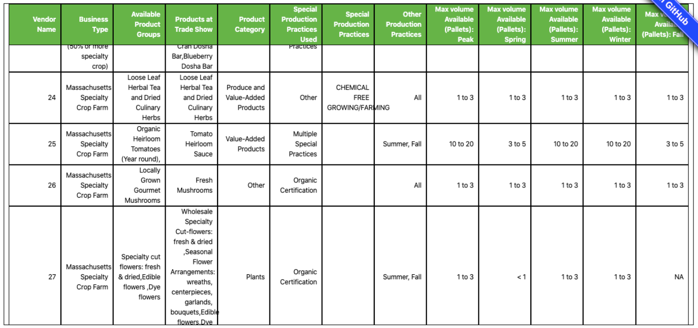

Demo Video
The following video demonstrates how to read and interact with our visualization.
Visualization Explanation
Specialty crop vendor information is represented by two major visualizations: a treemap and a table. Design aspects for both are described in the sections below.
Treemap
Our visualization aims to display trade show vendor attendees, grouped by subcategories, in a hierarchical format. The standard treemap view is depicted below.
Figure 1. Treemap, legend, and tooltip representing vendor information.
The treemap here serves as a categorization of vendors who go to the SBN trade show. Vendors listed in the table are represented in the grouped treemap cells; the area of each cell depicts how many vendors fall into a specified category. Using area to represent groups allows for the relative size of different subgroups to be directly compared. This data is currently nested by "Business Type" followed by "Product Category." A legend depicts which colors correspond to each business type; these colors were chosen to go along with food/crop colors that are commonly associated with fresh crops and farmers markets. For details on demand, hovering over a treemap cell displays all information for that cell within a tooltip: business type, product type, and total number of vendors. This prevents the treemap cells from showing too much text at once if it is not desired. The presence of the tooltip also indicates when a cell can be clicked.
Table
The same vendors are also represented in a table, this time showing more information. This table is shown in the figure below.

Figure 2. Table representing detailed vendor information.
We have implemented a scrollable table to display the 34 specialty crop vendors that we have data for. Including all of these subcategories in the treemap would have shown too much information, so instead the user has the option to identify their categories of interest before looking for more information. The “Vendor Name” column with ID numbers is representative of a possible addition that SBN could make to the data. We did not have the names of individual vendors, so we chose to assign values to each business. This table includes all useful information that could entice a seller into attending the Trade Show, including farm type, product offerings, production practices, and volume capabilities of each vendor.
Interaction
Mouseover and on-click events show details-on-demand and link the treemap and table. This is represented by the figure below.
Figure 3. On-click linking between the treemap and table.
The above images are an example of how the treemap and table would behave if the “Specialty Crop Value-Added Producer (50% or more specialty crop), Value-Added Products” treemap cell were to be clicked. The treemap and table are also interactive and linked to one another. Clicking on treemap cells filters the table so that only the vendors that fall within that category are shown. Clicking additional cells adds them to the filter, and clicking on already-selected cells removes them from the filter. A lower opacity cell color indicates if a cell is currently clicked.
Data Analysis
There were three separate datasets provided to us from SBN. One CSV contained information about the buyers. Two CSVs contained data from the vendors, separated by whether the vendor had specialty items. Our project focused on the specialty vendor data. This dataset contained 20 fields and 34 entries. The fields included categorical values like position of the person filling out the application, the type of business, certifications/special practices, and types of products and crops; ordinal values like the volume produced and the volume of capacity to sell to new accounts; and continuous quantitative values like percent of products sold to wholesale and goal percent of products sold to wholesale. Only values representing business and product types, certifications, and volumes were kept for the visualization.
Once we decided on the principal visualization we were creating, a treemap, we added additional fields to aggregate and/or summarize certain fields. Specifically, we categorized the crops and products into “Plants,” “Produce,” and “Value-Added Products,” combinations of those categories, and “Other.” Only the most common combinations were kept as their own categories, and the less common combinations were grouped into the “Other” category. For example, “Produce and Value-Added Products” had enough instances to be represented as its own category, but “Produce and Plants” did not, so it was grouped into “Other.” Similarly, we limited the number of different values in the certifications field. We categorized items if they had multiple certifications, and otherwise kept other values including singular certifications, “Other”, and “Not Applicable.” We needed to add these two fields to avoid excessively small areas in our treemap resulting from the various combinations of products and certifications. We also wanted to aggregate the data from the capacities that vendors were willing to take on from new buyers. Instead of having each season be a level within the hierarchy, we made an aggregate field that showed the max amount a vendor was capable of within a season. Another change from the provided data was a few of the column names; this would remove information that the average user does not need access to.
Task Analysis
Sustainable Business Network is looking for a visualization that will give suppliers and buyers an idea of whether they want to take part in the trade show. Summarizing and presenting the registration data will encourage trade show attendance by informing attendees about vendors. The primary consumer of the visualization would be those who are thinking about attending the trade show. SBN wants to attract more buyers by visualizing the vendor information.
Before we decided the specific visualization we were creating, we looked at the various potential tasks. The most important domain task was to categorize vendors by types of food they produce, the size of their farm, and the certifications they have. To do this, we have summarized the data as the analytical task, allow for the user to browse the data as the search task, and present this in our tree-map and linked table as the analyze task. The completion of this task would also aid in the goals of our second domain task: analyzing what types of vendors were unrepresented and what foods buyers were looking for. The goals of this task were to identify the categories and to provide the user capabilities to locate and derive information from what is missing. Because this information isn’t explicitly given to us, the process for addressing this domain task was based more on what isn’t shown in the visualization. A vendor can look at the visualization and realize that nobody else currently in the trade show hits the same niche. This can make a vendor more inclined to apply next year.
We had two other domain tasks that did not get represented by our visualization due to our focus on vendors. One task was to classify buyers by consumption (quantity and type). To do this we would need to summarize the data, provide browsing ability, and present this in our visualization. A third task was to visualize the location of vendors. This required comparing the values, providing browsing ability, and presenting this in our visualization.
Design Process
Our design process was split into these major iterations - a tableau Exploration, hand drawn sketches of our visualization, and a digitally sketched visualization with a lot of detail, usability testing and editing our visualization, and then the final visualization.
Before we were fully accustomed to our data and the project, we were tasked with combing through our data in Tableau to gain a further understanding of our data. Here we created several types of visualizations to try to fulfill the tasks we created in our task analysis section. We mostly created simple visualizations such as bar charts which plotted businesses to the amount of food they can provide, or a table showing business types.
The second iteration of sketches were hand drawn, as shown in the figure below. During this iteration, more of an emphasis was placed on creating a visualization with proper design choices that we learned in class.

Figure 4. Hand drawn sketch of visualization.
The third iteration of our visualization was a digitally sketched version using a combination of figma, tableau, and excel with a detailed explanation of how we expect our visualization to work. During this section, we created the specific filters (such as food category, farm category, pallet capacity, etc.) that our visualization would have as well as how brushing and linking would change the view of our visualization step-by-step. To see more specifications, look at figure 2 in the visualization section.

Figure 5. Digitally-created final design sketch.
Our next versions of our visualizations were created by coding it through Javascript. For the most part, we were able to bring to life our sketches, but we had some difficulty implementing interactivity and brushing and linking. After the fourth version, we conducted a usability test in class, and realized that our visualization was neither as clear nor as easy to use as we anticipated. Several key takeaways we took away was that we needed to make it easier for people unfamiliar with the data understand the data better (we did this by creating understandable category names, adding a legend, changing text in our data to be more concise, and getting rid of unimportant data), we needed to make the visualization look better (we eventually made the treemap and corresponding table smaller so that it was easier on the eye), and we needed to improve our brushing and linking (we did this by having a tooltip that that hovers over the tree map, and adding additional linking to our treemap and table). This final point was also brought up in course staff feedback to our Sprint 1 implementation. At the time, our tooltip only appeared below the treemap, making it easy to miss. It was later fixed to follow the user’s cursor and appear on mouseover events.
The final visualization design incorporated feedback from Sprint 2 implementation as well as changes following Sprint 1. These changes focused on improving design clarity and interactivity. To make the design clearer, the legend was placed next to the treemap instead of below, and the text was reformatted to avoid overlaps. A short note was also added above the treemap to prompt user interaction. Table information was improved by changing column header, such as replacing “0” with “Vendor Name,” to ensure that it accurately described the data. Interactivity was improved by adding to the existing mouseover and on-click events. Now, the user can hover and click on treemap cell labels to enable the tooltip and table filters, while previously these interactions only worked on cell areas outside of the text.
Conclusion
We applied information visualization principles and implemented several iterations of our design to create this interactive treemap-table for our partner, SBN. This process included interviewing a partner, understanding the problem at hand, brainstorming how to solve the problem, receiving a dataset, exploring a dataset, creating several mock sketches, completing several digitally coded versions as well going through usability test, and then eventually presenting our project to our instructors and partners. For future iterations, it would be helpful to conduct usability testing with SBN and intended users of the visualization. We received a lot of insight from the in-class usability session, but it would be more beneficial to conduct it on a more finalized design. Another future goal of the project would be implementing the user chosen treemap (the hand-drawn sketch in the previous section) where the user decides the treemap hierarchy. Due to the complexity of a treemap visualization and nesting JSON data, this goal was not attainable in the amount of time that we had. With additional time, we also would have explored d3’s nesting feature more heavily.
Overall, our group did the best we could considering the constraints we had—learning a new programming language, figuring out how to handle working remotely—to go through the visualization design process from start to finish. We look forward to applying the concepts and skills we have gained from this process to our own projects in the future.
Acknowledgments
- Pure CSS responsive "Fork me on GitHub" ribbon by Chris Heilmann.
- Underscore.Nest by Irene Ros.
- Underscore.js Javascript Library by Jeremy Ashkenas, DocumentCloud and Investigative Reporters & Editors.
- Treemap with Tooltip by Nathan Dobie.
- Treemap from Json format in d3.js by Yan Holtz.
- D3: Data-Driven Documents by Mike Bostock. In particular:
- d3-dispatch, which lets you register named callbacks and call them with arguments. We use it for linking.
- And thanks to Prof. Dylan Cashman and the course staff for their guidance throughout the course!